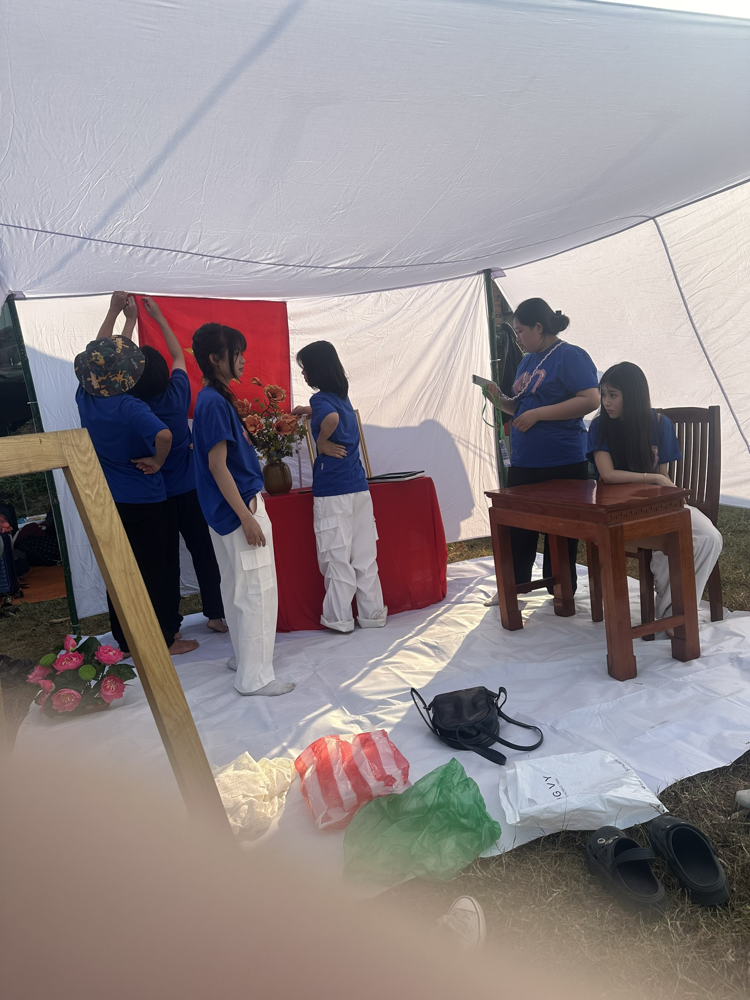

Ngập ngừng áo trắng ô hay
Bài thơ lưu bút trao tay thẹn thùng
Đến rồi ngày đỏ rưng rưng
Con ve rã giọng trên lưng phượng hồng
Thanh xuân cấp ba - một thời để nhớ
CHI ĐOÀN 12/1 – THPT NGUYỄN TRÃI
Thời gian vội vàng trôi đi, để lại cho chúng em biết bao nhiêu xao xuyến, luyến lưu, về một thời thanh xuân đáng nhớ, về những người bạn, người thầy, cô giáo đã cùng chúng em đi suốt quãng đường thanh xuân. Thoáng chốc là năm cuối cấp, ba năm cấp ba, 1095 ngày, một khoảng thời gian đủ để chúng em yêu, nhớ lắm cái màu của bốn mùa đi qua, nhớ màu đỏ rực của cây phượng ngoài sân, nhớ lắm tiếng kêu da diết của những chú ve sầu, những cơn mưa rào hối hả, nhớ lắm vẻ mặt say sưa của thầy cô giáo lúc giảng bài, nhớ cả những tiếng cười giòn tan của một thời thanh xuân....
Và “trại” - một trong những hoạt động thường niên như bất kì ngôi trường nào tổ chức, nhằm chào mừng Ngày Thành Lập Đoàn Thanh niên Cộng Sản Hồ Chí Minh chính là ngày mà biết bao nhiêu học sinh mong ngóng, một ngày hội tập thể nhằm thể hiện sức mạnh và tinh thần đoàn kết.
Trong lần kỉ niệm thứ 93 này, nhà trường đã mang lại cho học sinh một sân chơi lành mạnh, thú vị, sôi nổi và đầy bổ ích sau những ngày học tập mệt mỏi.
Để có một ngày trại thật vui và đáng nhớ, chúng em đã có những hoạt động chuẩn bị rất chu đáo, kĩ càng và hơn nữa là tạo ra rất nhiều khoảnh khắc khó quên.
Đây là một trong những kỉ niệm đáng giá nhất đối với bọn em, dân vũ là một trong các nội dung không thể thiếu của hội trại.Vì thế dẫu đang học lớp 12 với lịch trình học rất dày đặc lớp chúng em vẫn cố gắng tập trung thật đầy đủ nhiều khi có những bạn phải nghỉ học thêm để đi với lớp .Trong suốt tuần trước ngày cắm trại, cả lớp chúng em tất bật chuẩn bị nguyên liệu, mua dụng cụ để trang trí trại. Tiếp đó, vào chiều thứ năm trước ngày hội trại, chúng em có mặt ở trường từ sớm để trang trí trại của lớp. Ban đầu, chúng em đã khởi đầu công việc chậm hơn so với các lớp khác bởi lẽ chúng em vẫn còn một số công việc chưa chuẩn bị kĩ càng như ý tưởng, thiết kế cũng như những vật liệu cần thiết. Hihi, có nhiều cuộc tranh luận nổ ra và không sao, tranh luận ấy để đi đến thống nhất mà.Thế mới thấy uy lực của “Chị Nhàn” nhà chúng em!
Còn đây là quá trình dựng trại của chi đoàn A1, chúng em lên từ sớm để mang cổng trại lên lắp ráp cũng như gắn dây điện và dựng lều phụ. Nhờ có sự giúp đỡ của phụ huynh lớp nên mọi việc có vẻ suôn sẻ hơn, dù vậy vẫn phải đến 6h30 thì lớp mới có thể chuẩn bị đầy đủ và yên tâm về nhà chuẩn bị tư trang cho ngày mai đi trại .
Đến sáng thì chúng em chỉ cần lên để trang trí cho lều chính và nhờ sự chuẩn bị đầy đủ từ ngày hôm trước nên bọn em làm rất nhanh và ra chuẩn bị cho khai mạc .
Xin mọi người hãy chiêm ngưỡng thành quả của chi đoàn A1 chúng em dẫu còn nhiều thiếu sót xong bọn em đã cố gắng hết sức mình để có một ngày trại khó quên, viết tiếp những trang cuối cùng cho cuốn sổ thanh xuân của chính bản thân mỗi người.
đây là phần thi nhảy bao bố của lớp
Còn đây là hình ảnh của cuộc thi “Nhập vai thần tượng” sự hóa thân trở thành Đen Vâu với thông điệp nói về hoạt động tình nguyện của các bạn trẻ giúp nâng cao tinh thần “Tương thân tương ái” đã được ban giám khảo đánh giá cao và được tham gia vào vòng chung kết.
Đây là sự kiện mà tất cả trại sinh đều mong trờ nhất đó là đốt lửa trại.
Hòa trong không khí của sức trẻ tinh thần của mọi người được đẩy lên đến cực hạn. Đây cũng chính là ngày trại cuối cùng của những bạn học 12 nói chung và chi đoàn A1 nói riêng, bọn em sẽ mãi luôn ghi nhớ khoảnh khắc tươi đẹp này và đây cũng chính là kết cho ngày trại đầu tiên của bọn em
Khởi đầu cho ngày trại thứ 2 là phần thi trò chơi lớn bắt đầu từ 3h30-8h phần thi này đòi hỏi kĩ năng đoàn rất nhiều. Các thành viên trong đội tham gia trò chơi lớn đã chuẩn bị rất nhiều như trò chơi này như việc học mã morse.... Dẫu cho kết quả không được như lớp kì vọng nhưng các bạn đã cố gắng hết sức . Đây sẽ chính là bài học kinh nghiệm quý báu của các bạn để các bạn có thể hoàn thiện thêm kĩ năng đoàn của mình.
Tiếp tục cho hoạt động sáng nay là phần thi rung chuông vàng, bạn Thanh Bình đã xuất sắc vượt qua được được vòng 1 và dừng chân tại vòng 2. Dẫu thế chúng em cũng vô cùng hài lòng với kết quả này vì đây là sự cố gắng hết sức của bạn, bạn đã vượt qua được chính bản thân mình để giúp cho lớp tham gia đủ hoạt động khi tất cả đang tập trung cho dân vũ thi chung kết. Qua đây cũng giúp cho mọi người thấy được tinh thần tương trợ và đoàn kết của chi đoàn A1 chúng em .
Bữa tiệc nào cũng đến lúc phải tàn, và ngày hội trại của trường THPT Nguyễn Trãi cũng vậy. Ba năm học cấp 3 trôi qua nhanh như một giấc mơ, và đây là hội trại cuối cùng của lớp 12/1, hay còn gọi là A1.
Lòng tôi bồi hồi khi nhìn lại những gì đã qua. Vui mừng xen lẫn tiếc nuối, tự hào pha lẫn hụt hẫng. Vui vì đã có một ngày hội trại thật ý nghĩa, thật đáng nhớ. Tiếc nuối vì quãng thời gian cấp 3 ngắn ngủi đã sắp kết thúc. Tự hào vì những gì tập thể A1 đã đạt được. Hụt hẫng vì sẽ không còn những buổi sinh hoạt tập thể, những trò chơi vui nhộn, những đêm lửa trại bập bùng.
Hội trại đã để lại cho tôi vô vàn kỷ niệm đẹp. Đó là hình ảnh các bạn cùng nhau dựng trại, cùng nhau nấu ăn, cùng nhau chơi trò chơi, cùng nhau hát ca. Đó là những giọt mồ hôi, những nụ cười, những cái ôm, những lời động viên, an ủi. Đó là tình bạn, tình thầy trò, tình yêu thương được vun đắp qua từng ngày.
Tôi muốn gửi lời cảm ơn đến tất cả mọi người đã góp phần tạo nên một ngày hội trại thành công. Cảm ơn thầy cô giáo đã luôn dìu dắt, động viên chúng tôi. Cảm ơn các bạn trong lớp đã luôn sát cánh bên nhau. Cảm ơn nhà trường đã tổ chức một sân chơi bổ ích và ý nghĩa.
Hội trại đã kết thúc, nhưng những kỷ niệm đẹp đẽ sẽ mãi mãi in sâu trong tâm trí mỗi người. Ba năm học cấp 3 tuy ngắn ngủi nhưng đã để lại cho tôi những ký ức đẹp đẽ và khó phai. A1 ơi, tôi sẽ nhớ mãi về các bạn!
Những ngày tháng cuối cùng của thanh xuân, xin gửi lại đây nhé, nhật ký hãy lưu lại những giây phút đáng nhớ này, để rồi sau này nhìn lại, chúng ta đã có một tuổi trẻ đầy vui tươi, ngọt ngào như thế.....